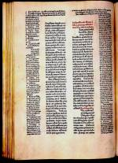

[Justinianus, Institutiones. Moguntiae, Petrus Schoyffer de Gernszheym, 1468.] -- (1371 A 9)
Tijdens zijn regeringsperiode als keizer van het Oostromeinse rijk liet Justinianus (529-565) het Romeinse privaatrecht onderbrengen in één geheel: het ‘Corpus iuris civilis’. Dit corpus bestaat uit vier stukken: de ‘Digesta’ of ‘Pandecta’, de ‘Codex’, de ‘Institutiones’ en de ‘Novellae’.
In de hier getoonde incunabel zijn de ‘Institutiones’, een inleidend leerboek in de rechtswetenschap, opgenomen. Het boek werd, op perkament en met rode en zwarte inkt, in Mainz gedrukt door Peter Schöffer, een van de medewerkers van Johann Gutenberg. Qua uiterlijk komt het boek volkomen overeen met de handschriften waaraan de juristen gewend waren, niet alleen in lay-out, maar ook in lettertype.
Literatuur
- L. Hain, Repertorium bibliographicum, in quo libri omnes ab arte typographica inventa usque ad annum MD typis expressi ordine alphabetico vel simpliciter enumerantur vel adcuratius recensentur. Stuttgartiae [etc.] 1826-1838. 2 dln in 4 pts, *9489.
| vorige pagina | top pagina |